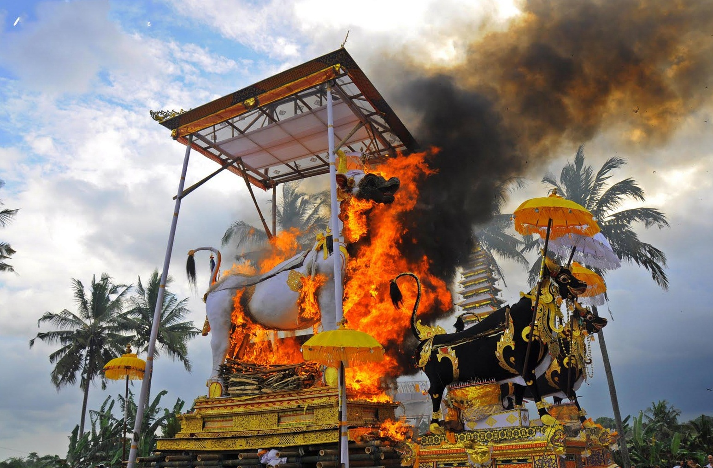
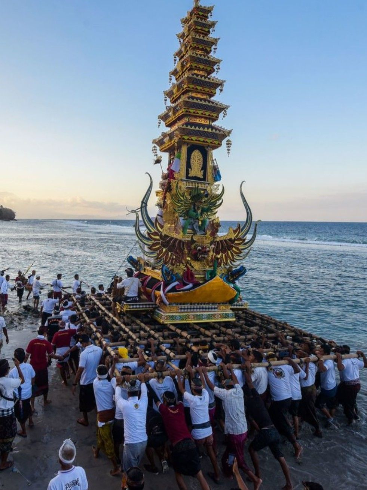

Ngaben merupakan salah satu upacara kematian dalam tradisi umat Hindu di Bali yang termasuk dalam rangkaian Pitra Yadnya. Pitra Yadnya adalah upacara keagamaan yang ditujukan kepada roh para leluhur dan dilaksanakan secara bertahap, mulai dari prosesi kematian hingga upacara penyucian roh leluhur. Ngaben dalam bahasa Bali berkonotasi halus yang sering disebut palebon. Palebon berasal dari kata lebu yang artinya prathiwi atau tanah.Palebon artinya menjadikan prathiwi (abu). Untuk menjadikan tanah itu ada dua cara yaitu dengan cara membakar (ngaben) dan menanam ke dalam tanah (metanem).